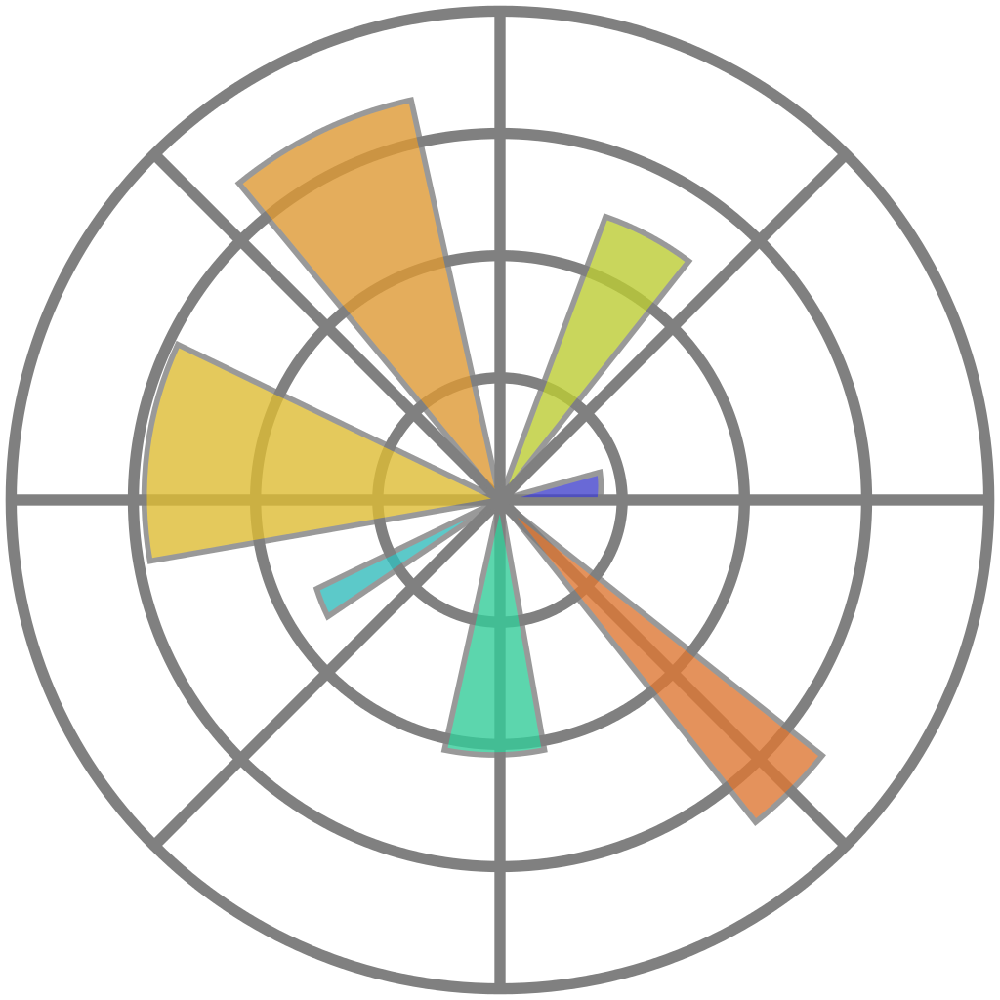
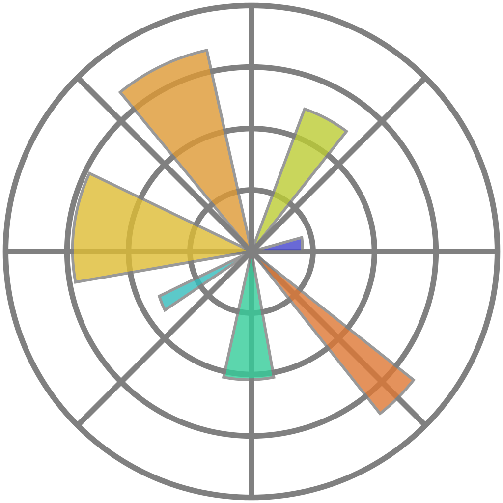

Close
Close

Who needs eResearch Skills?
Program or be Programmed
- "Data Scientist" - "Food Chef?"
- Reproducible data-driven research is programming.
- Come for the labour savings, but stay for the audit trail
Modelling and Inference
- Convergence between the third and fourth paradigms:
- We need big-data methods to understand the outputs of models
- Inferential methods require high performance techniques to model the data
- Statistical, algorithmic, computational literacies relevant across the board
The syllabus is full.
- Ideally, everyone would know everything!
- This is clearly impossible
- So we need division of labour.
The three Roles
- Methods and algorithms researchers
- Data-literate domain researchers
- Translational e-Research collaborators
- Research Software Engineers
- Data Scientists
Careers must be fluid
- Evolving interests, revolving doors
- Seniority and status in each
Who needs to know what?
What do Data-literate domain researchers need to know?
Data-literate domain researchers need to know:
- Their research domain!
Reproducible research methods
- Scripting and data programming
- Automated testing
- Workflow building and "glueware"
Reproducible research methods


Logos are used here to represent the kind of thing I'm talking about, not at all exhaustive of all the cool things you need to know
Computational collaboration methods
- Collaborative authoring
- Version control
- Code review
Computational collaboration methods

Open science literacies
- Working with linked open data
- Data and software publication
- Licensing and copyleft
Open science literacies


Data wrangling and presentation
- Data cleaning
- Databases
- Visual display of quantitative information
- Applied statistical inference
Data wrangling and presentation

 


What do methods and algorithms researchers need to know?
Methods and algorithms researchers need to know:
- Their mathematical domain!
The same things domain scientists do
High performance computing and optimisation
- Schedulers, both traditional (qsub) and "cloudy" (hadoop etc)
- Parallel programming languages (MPI, OpenMP, CUDA)
- Parallel programming patterns and approaches (Map/Reduce...)
- Storage and IO performance
High performance computing and optimisation


Expressive mathematical programming
- Functional programming
- Domain specific languages
- Code generation and templating
Expressive mathematical programming

What do translational collaborators need to know?
Enough mathematics and science to be relevant
- Read a paper, see the code
- Mathematical literacies
- algorithms, statistics, calculus, geometry...
- Deep research background in something to understand the culture of research
- Fundamental core understanding across the domains they work with
The same things as domain scientists
The same things as algorithms researchers
Deployability

Continuous Integration

Documentation

Software Project Management

Working effectively with legacy code
Business models for open science

Community building and engagement (citation generator)

The application of the algorithmic toolbox

Selection and optimisation of available compute and data platforms

How do we teach this?
Intensive introductions
- Researchers are clever!
- Rumsfeld's law: unknown unknowns
- Drawing people's attention to new ways of working is critical
- Software Carpentry and Data Carpentry
Digitally native learning tools
- Web-first but classroom- and kindle-ready
- Single source, multiple formats
- Examples which work:
- Generated lecture notes from code that is executed and complete
- Open and collaborative
- CC-BY license on notes
- Massive cross-institutional co-creation
Active classrooms
- Practicals and concepts together
- Bring your own device
- Post-it-notes and etherpads
Who can teach this?
Research Software Engineers and Data Scientists as Teachers
- The collaborator role is perfectly placed to teach these skills
- Broad perspective
- Continuing practical experience
- Generates opportunities for collaboration
RITS's training programme
- Software carpentry
- Data carpentry
- Introductory Python for Data Analysis
- Research Software Engineering with Python
- Research Computing with C++
High Performance and High Throughput Computing
See the materials